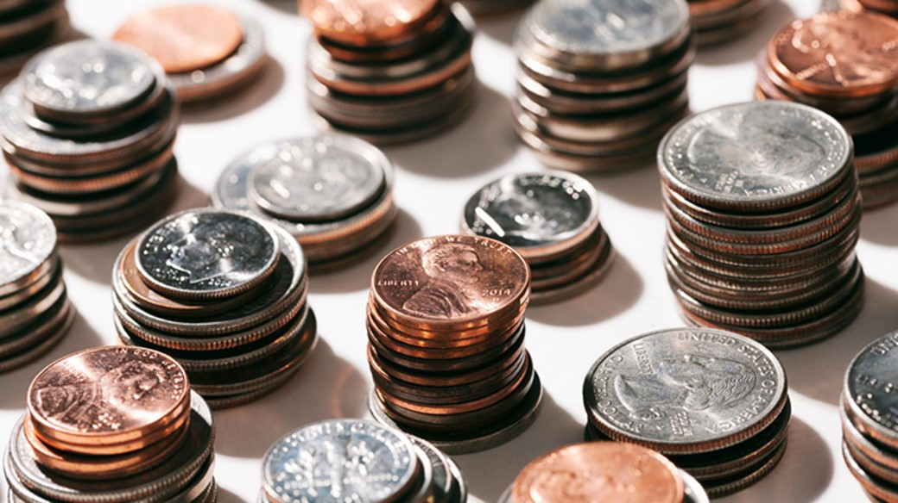
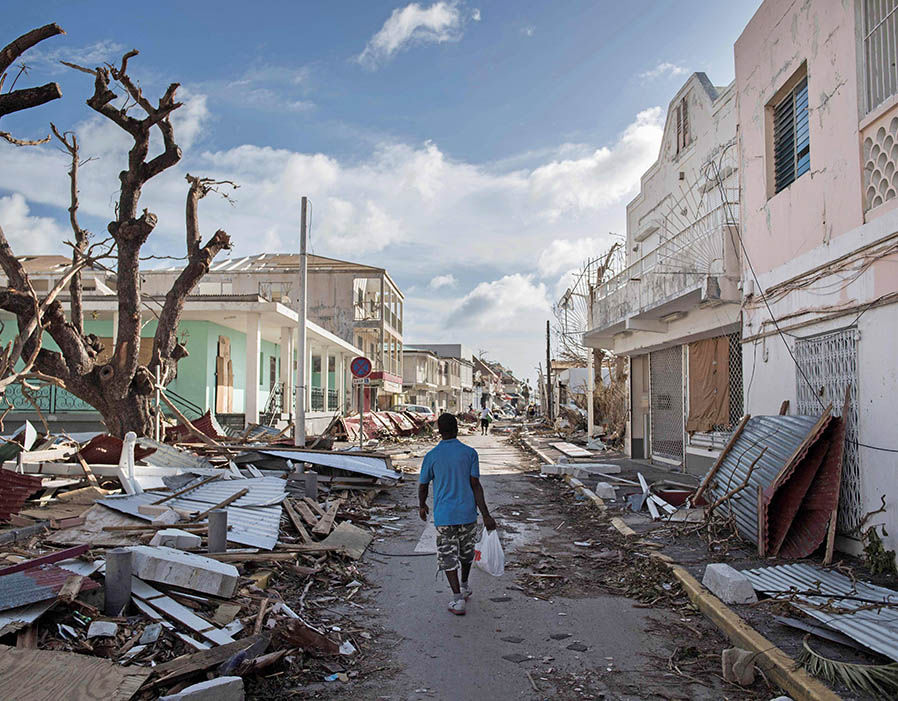

Welcome To SpareCents!
About Us
This site was designed to help raise money for countries
who have faced a disaster. The individual will make a transaction on any item and will be asked if they want to donate. If the person will like to donate their transaction will be rounded up to the nearnest dollar.


Recent Diaster
In 2017 the World experienced some intense hurricanes across the coast. Many people went out they way to help others in hard tme. We believe our app would be a great tool to help diaster victims get the help they deserve.